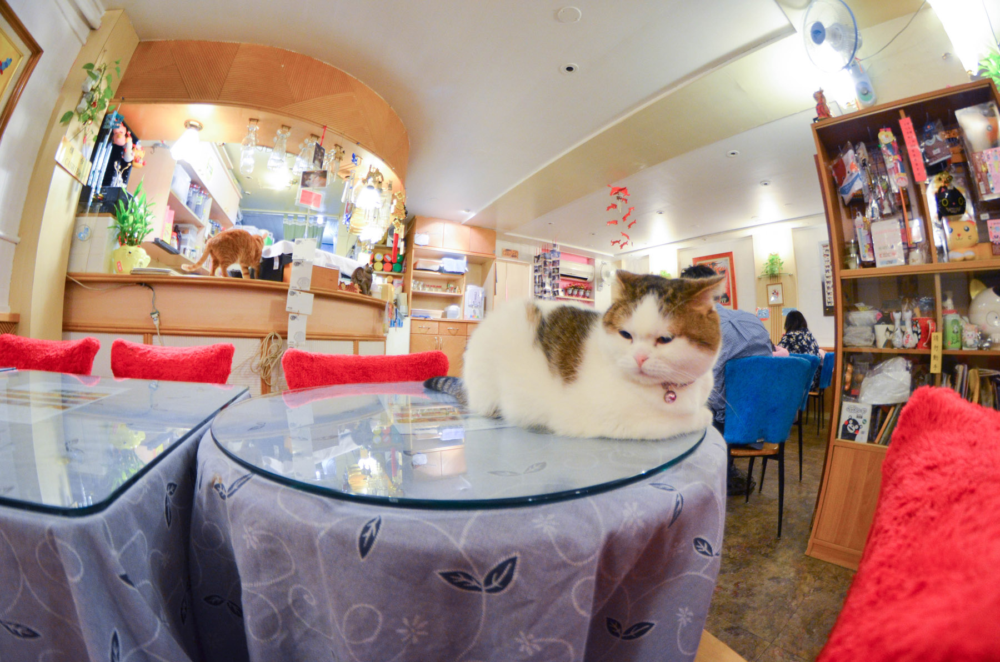
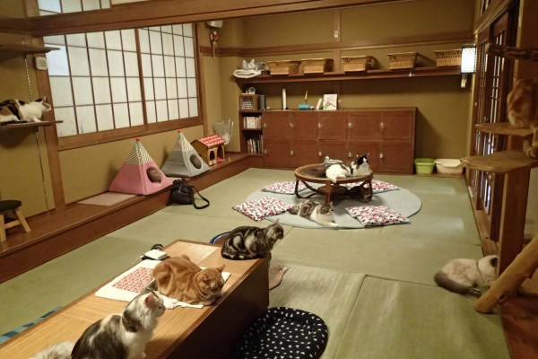

O primeiro café para gatos do mundo, chamado "Cat Flower Garden", foi inaugurado em Taipei, Taiwan, em 1998 e eventualmente se tornou um destino turístico global.
O conceito floresceu no Japão, onde o primeiro chamado "Neko no Jikan" (literalmente "Tempo do Gato") foi inaugurado em Osaka em 2004.
Devido ao tamanho do terreno e à população do Japão, muitos residentes moram em pequenos apartamentos ou condomínios que não permitem animais de estimação, tornando o cat café um destino muito popular para jovens trabalhadores que buscam o companheirismo e o conforto oferecidos. O primeiro cat café de Tóquio, chamado "Neko no mise" (Loja de gatos), foi inaugurado em 2005.
Depois disso, a popularidade dos cat cafés explodiu no Japão. De 2005 a 2010, setenta e nove cat cafés foram abertos em todo o país.

